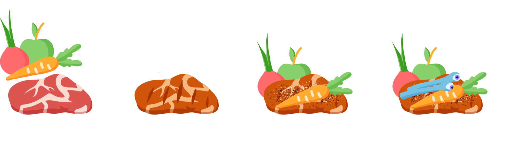

<!DOCTYPE html>
<html lang="de"><head>
<meta charset="UTF-8">
<meta name="viewport" content="width=device-width, initial-scale=1.0">
<title>Meruria — Sammeln &amp; Handwerk</title>
<link rel="stylesheet" href="assets/styles/global/fonts.css">
<link rel="stylesheet" href="assets/styles/global/base.css">
<link rel="stylesheet" href="assets/styles/pages/Sammeln und Handwerk.css">
<script src="assets/scripts/vendor/react.development.js"></script>
<script src="assets/scripts/vendor/react-dom.development.js"></script>
<script src="assets/scripts/vendor/babel-standalone.js"></script>
<script src="assets/components/tweaks-panel-8.jsx" type="text/babel"></script>
<script src="assets/components/nav.jsx" type="text/babel"></script>
<script src="assets/scripts/vendor/supabase.min.js"></script>
<script src="assets/scripts/supabase-client.js"></script>
<script src="assets/components/site-gate.jsx" type="text/babel"></script>
<script src="assets/components/particle-field.jsx" type="text/babel"></script>
</head>
<body>
<div id="root"></div>
<script type="text/babel">
const { useState, useEffect, useCallback } = React;
const { useTweaks, TweaksPanel, TweakSection, TweakToggle, SiteNav, ParticleField, SiteGate } = window;

const TWEAK_DEFAULTS = /*EDITMODE-BEGIN*/{
  "showParticles": true,
  "accentColor": "#7c4dff"
} /*EDITMODE-END*/;

// ── DATA ──────────────────────────────────────────────────────────────────────

const FOOD_COLS = [
  { title:'Einfache Zutaten', items:[
    {name:'Zubereitetes Obst/Gemüse',stat:'+5 Sättigung'},
    {name:'Rohes Obst/Gemüse (ungiftig)',stat:'+5 Sättigung'},
    {name:'Rohes Obst/Gemüse (giftig)',stat:'+5 Sättigung',warn:'KON-Rettungswurf'},
    {name:'Milchprodukte',stat:'+5 Sättigung'},
    {name:'Rohes Fleisch',stat:'+5 Sättigung',warn:'KON-Rettungswurf'},
    {name:'Spezielle Zutaten',stat:'Schlechter Effekt',bad:true},
  ]},
  { title:'Einfach Gekocht', items:[
    {name:'Zubereitetes Fleisch',stat:'+10 Sättigung'},
    {name:'Getreideprodukte',stat:'+10 Sättigung'},
  ]},
  { title:'Alltägliche Gerichte', items:[
    {name:'+30 Sättigung'},
    {name:'+1 TP beim nächsten Heilen mit Trefferwürfeln'},
  ], note:'Zutaten + Gewürze nötig. Haltbar 2 Tage.' },
  { title:'Spezielle Gerichte', items:[
    {name:'Vollständige Sättigung'},
    {name:'+1 TP pro Würfel beim Heilen'},
    {name:'Guter oder schlechter Effekt',warn:'je nach Zutat'},
  ], note:'Gewürze + spezielle Zutat + Rezept. Koch würfelt KON/WEI gegen Rezept-SG. Haltbar 2 Tage.' },
];

// ── HELPERS ────────────────────────────────────────────────────────────────────

function hexPts(s){const c=s/2,pts=[];for(let i=0;i<6;i++){const a=Math.PI/180*(60*i-30);pts.push(`${c+c*Math.cos(a)},${c+c*Math.sin(a)}`);}return pts.join(' ');}
function Oct({size=8,color='rgba(124,77,255,0.6)',fill='rgba(124,77,255,0.2)',sw=1,style={}}){return <svg width={size} height={size} viewBox={`0 0 ${size} ${size}`} style={{display:'block',flexShrink:0,...style}}><polygon points={hexPts(size)} fill={fill} stroke={color} strokeWidth={sw}/></svg>;}

function useReveal(dep){
  useEffect(()=>{
    const obs=new IntersectionObserver(entries=>{
      entries.forEach(e=>{if(e.isIntersecting){e.target.classList.add('visible');obs.unobserve(e.target);}});
    },{threshold:0.08});
    document.querySelectorAll('.reveal-up,.reveal-left').forEach(el=>{el.classList.remove('visible');obs.observe(el);});
    return ()=>obs.disconnect();
  },[dep]);
}

function SH({mono, title, accent}){
  const ac = accent || 'rgba(124,77,255,0.6)';
  return(
  <div className="reveal-left" style={{marginBottom:'28px',paddingBottom:'14px',borderBottom:`1px solid ${ac}22`}}>
    {mono&&<div style={{fontFamily:'var(--font-mono)',fontSize:'8px',letterSpacing:'0.3em',color:`${ac}55`,textTransform:'uppercase',marginBottom:'5px'}}>{mono}</div>}
    <div style={{display:'flex',alignItems:'center',gap:'12px'}}>
      <Oct size={8} color={`${ac}66`} fill={`${ac}22`} sw={1}/>
      <h2 style={{fontFamily:'var(--font-display)',fontSize:'18px',fontWeight:'300',letterSpacing:'0.2em',color:'var(--white)',textShadow:`0 0 20px ${ac}33`,textTransform:'uppercase',margin:0}}>{title}</h2>
    </div>
    <div style={{width:'40px',height:'1px',background:`linear-gradient(90deg,${ac}77,transparent)`,marginTop:'10px',animation:'pulse-glow 3s infinite'}}/>
  </div>
);}

function SubH({children,id}){return <h3 id={id} style={{fontFamily:'var(--font-display)',fontSize:'13px',fontWeight:'400',letterSpacing:'0.18em',color:'rgba(160,140,255,0.85)',textTransform:'uppercase',margin:'26px 0 12px',paddingBottom:'7px',borderBottom:'1px solid rgba(124,77,255,0.1)',scrollMarginTop:'70px'}}>{children}</h3>;}
function TW({children}){return <div style={{border:'1px solid rgba(124,77,255,0.18)',borderRadius:'3px',overflow:'hidden',margin:'12px 0 20px',background:'rgba(10,8,28,0.6)'}}>{children}</div>;}
function Txt({c,s={}}){return <p style={{fontFamily:'var(--font-body)',fontWeight:'300',fontSize:'12px',lineHeight:'1.9',color:'rgba(200,190,240,0.55)',letterSpacing:'0.03em',marginBottom:'10px',textWrap:'pretty',...s}}>{c}</p>;}
function Acc({c}){return <strong style={{color:'rgba(160,140,255,0.9)',fontWeight:'500'}}>{c}</strong>;}

// ── FOOD SECTION ──────────────────────────────────────────────────────────────

function FoodSection(){
  return(
    <div style={{border:'1px solid rgba(124,77,255,0.18)',borderRadius:'3px',overflow:'hidden',marginBottom:'22px',background:'rgba(10,8,28,0.6)'}}>
      <div style={{background:'rgba(255,255,255,0.02)',borderBottom:'1px solid rgba(124,77,255,0.12)'}}>
        
      </div>
      <div style={{display:'grid',gridTemplateColumns:'repeat(4,1fr)'}}>
        {FOOD_COLS.map((col,ci)=>(
          <div key={ci} style={{padding:'15px 13px',borderRight:ci<3?'1px solid rgba(124,77,255,0.1)':'none'}}>
            <div style={{fontFamily:'var(--font-display)',fontSize:'9px',letterSpacing:'0.14em',color:'rgba(160,140,255,0.85)',textTransform:'uppercase',marginBottom:'11px',paddingBottom:'6px',borderBottom:'1px solid rgba(124,77,255,0.12)'}}>{col.title}</div>
            {col.items.map((item,ii)=>(
              <div key={ii} style={{marginBottom:'8px'}}>
                <div style={{fontFamily:'var(--font-body)',fontWeight:'400',fontSize:'11px',color:item.bad?'rgba(255,110,110,0.8)':'rgba(220,210,255,0.85)',lineHeight:'1.35'}}>{item.name}</div>
                {item.stat&&<div style={{fontFamily:'var(--font-mono)',fontSize:'9px',color:'rgba(94,232,208,0.7)',marginTop:'1px'}}>{item.stat}</div>}
                {item.warn&&<div style={{fontFamily:'var(--font-mono)',fontSize:'9px',color:'rgba(255,160,100,0.7)',marginTop:'1px'}}>+ {item.warn}</div>}
              </div>
            ))}
            {col.note&&<div style={{marginTop:'8px',paddingTop:'6px',borderTop:'1px solid rgba(124,77,255,0.09)',fontFamily:'var(--font-body)',fontWeight:'300',fontSize:'10px',color:'rgba(200,190,240,0.32)',fontStyle:'italic',lineHeight:'1.5'}}>{col.note}</div>}
          </div>
        ))}
      </div>
    </div>
  );
}

// ── KOCHEN SECTION ────────────────────────────────────────────────────────────

function KochenSection({ accent }) {
  return (
    <section style={{marginBottom:'64px'}}>
      <SH mono="Sammeln &amp; Handwerk" title="Kochen" accent={accent}/>

      <SubH id="sec-haltbarkeit">Haltbarkeit von Lebensmitteln</SubH>
      <Txt c={<>Nach Ablauf der Haltbarkeit: <Acc c="KON-Rettungswurf gegen SG 10"/>, sonst vergiftet.</>}/>
      <TW><table className="eq-table"><thead><tr><th>Lebensmittel</th><th>Haltbarkeit</th><th>Konservierung</th></tr></thead><tbody>
        <tr><td>Beeren</td><td>2 Tage</td><td>—</td></tr>
        <tr><td>Fleisch</td><td>3 Tage</td><td>Räuchern, Einlegen, Trocknen</td></tr>
        <tr><td>Obst &amp; Gemüse</td><td>10 Tage</td><td>Trocknen</td></tr>
        <tr><td>Getreideprodukte</td><td>10 Tage</td><td>—</td></tr>
        <tr><td>Milchprodukte</td><td>14 Tage</td><td>—</td></tr>
      </tbody></table></TW>

      <SubH id="sec-nahrung">Nahrungsaufnahme</SubH>
      <Txt c="Die Qualität der Mahlzeit bestimmt den Sättigungswert. Von links nach rechts steigt die Qualität."/>
      <FoodSection/>
      <div className="feat reveal-up"><div className="feat-name">Alltägliche Gerichte</div><div className="feat-text">Alltägliche Gerichte müssen aus mehreren Zutaten bestehen und sind 2 Tage lang ohne Probleme genießbar. Ein Koch kann ein alltägliches Gericht kochen, wenn er über Gewürze verfügt.</div></div>
      <div className="feat reveal-up"><div className="feat-name">Spezielle Gerichte</div><div className="feat-text">Spezielle Gerichte sind 2 Tage lang ohne Probleme genießbar. Ein spezielles Gericht erfordert Gewürze, eine spezielle Zutat — besondere Pflanzen, seltenes Obst oder Teile von Tieren und Monstern — und einen Koch, der das Rezept beherrscht. Der Koch muss pro Portion jeweils einen Konstitutions- oder Weisheitswurf (seine Wahl) gegen den SG des zu kochenden Gerichts ablegen. Dieser steigt basierend auf der verwendeten speziellen Zutat. Ist der Koch geübt im Umgang mit Kochutensilien, kann er seinen Übungsbonus dem Wurf hinzufügen. Ein fehlgeschlagener Wurf erzeugt Portionen, deren Essen unvorteilhafte Effekte verursachen kann.</div></div>
    </section>
  );
}

// ── APP ────────────────────────────────────────────────────────────────────────

function App() {
  const [mouse, setMouse] = useState({ x: 0.5, y: 0.5 });
  const [tweaks, setTweak] = useTweaks(TWEAK_DEFAULTS);
  const accent = tweaks.accentColor || '#7c4dff';
  const handleMouseMove = useCallback((e) => { setMouse({ x: e.clientX / window.innerWidth, y: e.clientY / window.innerHeight }); }, []);
  useReveal('main');

  return (
    <SiteGate>
      <div onMouseMove={handleMouseMove} className="page-root">
        {tweaks.showParticles && <ParticleField mouseX={mouse.x} mouseY={mouse.y} accent={accent} />}
        <SiteNav rightLabel="SPIELERHANDBUCH" />

        <div style={{ position:'relative', zIndex:5, maxWidth:'900px', margin:'0 auto', padding:'48px 36px 80px' }}>
          <div style={{ marginBottom:'48px' }}>
            <div style={{ fontFamily:'var(--font-mono)', fontSize:'8px', letterSpacing:'0.3em', color:`${accent}44`, textTransform:'uppercase', marginBottom:'10px' }}>Spielerhandbuch</div>
            <h1 className="reveal-left visible" style={{ fontFamily:'var(--font-display)', fontSize:'42px', fontWeight:'300', letterSpacing:'0.18em', color:'var(--white)', textShadow:`0 0 30px ${accent}55`, margin:0 }}>Sammeln &amp; Handwerk</h1>
            <div style={{ display:'flex', alignItems:'center', gap:'8px', marginTop:'12px' }}>
              <div style={{ width:'50px', height:'1px', background:`linear-gradient(90deg,${accent}cc,transparent)`, animation:'pulse-glow 3s infinite' }}/>
              <Oct size={8} color={`${accent}88`} fill={`${accent}33`} sw={1}/>
            </div>
          </div>

          <KochenSection accent={accent}/>
        </div>

        <TweaksPanel tweaks={tweaks} setTweak={setTweak}>
          <TweakSection label="Anzeige">
            <TweakToggle k="showParticles" tweaks={tweaks} setTweak={setTweak}>Partikelfeld</TweakToggle>
          </TweakSection>
        </TweaksPanel>
      </div>
    </SiteGate>
  );
}

ReactDOM.createRoot(document.getElementById('root')).render(<App/>);
</script>
</body>
</html>
